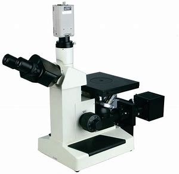

仪器列表
| 仪器名称 |
设备编号 |
地址 |
当前使用者 |
负责人 |
操作 |
| {{user.instrument_name}} |
{{user.location}} |
{{user.admin}} |
{{user.admin}} |
{{user.admin}} |
|

- 仪器名称 : 张德山
- 状态 : 可用
- 使用费用 : 可用
- 型号 : 本科生
- 仪器编号 : 本科生
- 规格 : 枸杞生命科学研究课题组
- 放置地点 : 西北农林科技大学生命学院
- 所属单位 : 计算机141
- 负责人 : 87655678@out.com
- 分类号 : 345678
- 仪器名称 : 张德山
- 型号 : 本科生
- 仪器编号 : 本科生
- 规格 : 枸杞生命科学研究课题组
- 放置地点 : 西北农林科技大学生命学院
- 所属单位 : 计算机141
- 负责人 : 87655678@out.com
- 制造国家 : 345678
- 价格 : 345678
- 生产厂家 : 345678
- 出厂日期 : 345678
- 生产日期 : 345678
- 技术指标 : 345678
- 主要功能 : 345678
- 主要附件及配置 : 345678
| 使用人姓名 |
使用时间 |
使用状态 |
使用反馈 |
负责人 |
| {{user.instrument_name}} |
{{user.location}} |
{{user.admin}} |
{{user.admin}} |
{{user.admin}} |